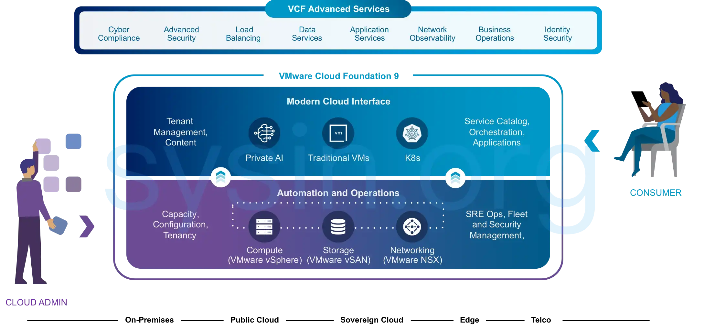
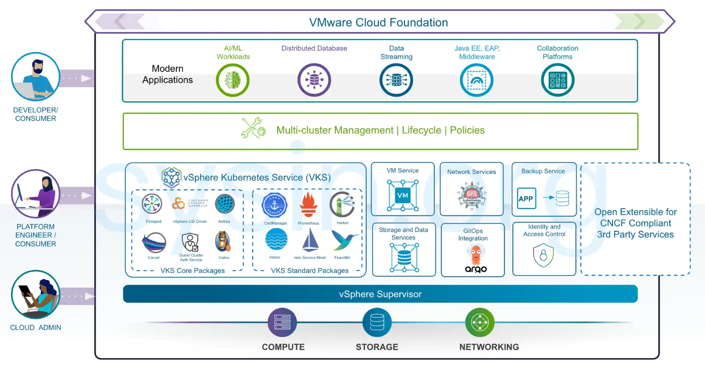

请访问原文链接：VMware Cloud Foundation 9.1 - 领先的多云平台 查看最新版。原创作品，转载请保留出处。
生活本不易，原创更不易。还请友商高抬贵手，尊重彼此的劳动成果。谢谢🙏
作者主页：sysin.org
2026 年 5 月 13 日，VMware Cloud Foundation 9.1 已正式发布。

多年来，数字化转型一直被描绘成一种二选一的抉择：要么在公有云中快速推进，要么保留本地部署的控制权——但往往要以牺牲敏捷性、增加复杂性以及技术债务为代价。这种权衡如今已不再合理。
现代工作负载，尤其是 AI 和数据密集型应用，正在推动一种全新的现实。以 PB 级规模的数据集，不可能轻易在不同区域之间传输。监管要求日益严格，越来越多的关键工作负载必须留在主权边界之内。同时，“按需付费”的云模式所带来的账单和成本冲击，也逐渐让各行业的财务团队措手不及。
借助 VCF 9，VMware 正在重新定义现代私有云的能力——融合了云体验的速度与灵活性 (sysin)，以及企业在本地部署中所需的性能、治理和成本控制。
当构建得当时，一个现代私有云应当具备以下特点：
- 将服务器、存储和网络视为灵活的软件资源池；
- 向开发人员提供自助式 API，而不是排队等候的服务单系统；
- 支持虚拟机、容器以及新兴的 AI 服务作为一等工作负载并行运行；
- 在核心数据中心、边缘节点以及主权设施之间保持一致性，无需政策混乱；
- 内建可审计的安全机制，并为工作负载在任何位置的运行提供合规保障。
概述
VMware Cloud Foundation 是一个统一的私有云平台，将公有云的规模与敏捷性与私有云的安全性与高性能相结合，从而提升生产力并降低总体拥有成本（TCO）。该平台通过在所有终端上集成企业级计算、网络、存储、管理和安全功能，实现基础架构的现代化。

借助自动化基础架构与智能运维，组织能够优化性能、降低成本并减少运维负担。VMware Cloud Foundation 还提供自助式 IaaS 平台，具备现代化云界面，可加速创新并运行虚拟机、容器和 AI 工作负载。
内置的安全性和弹性能力可保障业务安全，确保业务连续性，让团队专注于创新，而非应对安全威胁。
新增功能
VMware Cloud Foundation 9.0 | 17 JUN 2025 | Build 24755599
以下是 VMware Cloud Foundation 9.0 的主要功能与特性：
✅ 一站式私有云运维界面
VMware Cloud Foundation 9.0 提供简化的私有云构建、运维与安全管理体验，统一在一个界面中完成。VCF Operations 提供了全新的运维体验，而全新 VCF Installer 提供的构建体验则可快速部署并集成治理机制，从而加快启动速度，减少设置时间与复杂性，并从第一天起通过成本管理与策略执行确保合规性与运维效率。
✅ 一站式云资源消费体验
VMware Cloud Foundation 9.0 为使用基础架构的团队提供流畅、云原生的体验，统一通过单一界面交付。VCF Automation 使 IT 团队和云服务提供商能够向应用团队交付自助式私有云 (sysin)。该平台内置丰富的云服务，可用于部署虚拟机、Kubernetes、网络、存储卷、密钥库、数据库、Harbor 镜像仓库、外部 DNS、证书以及 AI 工作负载。
✅ 原生运行容器、虚拟机和传统应用
借助 VMware Cloud Foundation 9.0，您可在同一平台上原生运行容器、虚拟机和企业应用。平台开箱即用地集成 Kubernetes 与虚拟化，免去构建多套系统的需求，让开发人员与 IT 团队立即开始构建和运行工作负载，从而简化工作流程、提升生产效率。
✅ 主权、安全与合规的平台能力
VMware Cloud Foundation 9.0 致力于实现高标准的数据控制、合规性和业务弹性，确保组织在监管日益严格、地缘政治不确定性加剧的时代中安心运营。VCF 9.0 实现了数据主权与云敏捷性的平衡，让您在掌控数据存储、处理和访问方式的同时，保留云操作的灵活性。
✅ 私有云成本透明化
VMware Cloud Foundation 9.0 带来了私有云的财务透明性，确保组织可在规模扩展的同时避免成本失控或隐藏浪费。VCF 提供深入的成本洞察，涵盖软件许可、运营支出，甚至物理数据中心成本，帮助您全面掌握总拥有成本（TCO）。
✅ 可访问性与安全性
在 VCF 9.0 中，所有组件均更新为符合 NIST 推荐的加密模块标准 FIPS 140-2 和 140-3。vCenter、ESX 和 NSX 等组件默认以 FIPS 模式运行 (sysin)，且该模式不可禁用。
✅ 许可管理
现在您可通过 VCF Operations 在整个环境中统一管理许可，并可从 Broadcom 支持门户中的 VCF Business Services 控制台（vcf.broadcom.com）管理多个 VCF Operations 实例的许可。
主要变化包括：
- 集中许可管理：通过 VCF Operations 为 vCenter 实例分配许可，所有连接到该实例的主机和组件会自动获得授权。
- 连接与脱机模式支持：VCF Operations 可连接 VCF Business Services 控制台以加快许可、更新和报告流程，也可在脱机模式下运行。
- 更少的许可证类型：VCF 仅需两个许可类型：
- “VMware Cloud Foundation（按核心）”
- “VMware vSAN（按 TiB）”- vSphere Foundation 亦采用相同模式。
- 统一许可文件：可导入单个许可文件为整个环境授权。若为连接模式，第一个许可文件将在注册完成后自动下载。
- 授权逻辑：向 vCenter 分配许可后，ESX 主机、NSX、VCF Operations、HCX、VCF Automation 等组件均会自动获得授权。
- 许可使用报告：每 180 天必须提交一次许可使用信息，否则主机会与 vCenter 断开连接，无法启动新工作负载（已有工作负载不会被中止）。连接模式下此操作为自动提交，但仍需在 VCF Operations 中点击“更新许可”以确认；脱机模式请按照文档操作。
- 主机自动恢复：一旦重新应用有效许可或刷新许可 (sysin)，主机会自动恢复全部功能。
- 动态许可调整：在 VCF Business Services 控制台中修改许可数量无需重新分配。
- 使用情况可视化：VCF Operations 和 VCF Business Services 控制台可统一展示长期使用情况。
- 评估期延长：评估模式延长至 90 天。
- 许可使用文件数据说明：仅收集如下信息：生成时间戳、使用详情（支持 VCF 9 前后版本）、VCF Operations 实例唯一 ID、使用报告唯一 ID、未使用的许可、使用异常、当前状态等。不收集任何个人或客户数据。
✅ 各组件的新增功能
有关 VMware Cloud Foundation 9.0 各组件的详细新增功能，请参阅各组件的发行说明和本站相关页面。
- vSphere
- vSAN
- NSX
- …
下载地址
VMware Cloud Foundation 9.0 | 17 JUN 2025
- VCF Installer
- Download Tool (Optional)
- 文档：
VMware Cloud Foundation 9.1 | 12 MAY 2026
- VCF Installer
- Download Tool (Optional)
- 请访问：VMware Cloud Foundation Installer 9.1 - VCF 和 VVF 部署工具
VMware Cloud Foundation 是一套关联的产品组合，主要组件如下：
vSphere：VMware vSphere 9.1 发布 - 企业级工作负载引擎
ESXi：
vSAN：VMware vSAN 9.1 发布 - 面向云计算的软件定义存储
Operations：
- VMware Cloud Foundation Operations 9.1 - 私有云运维管理
- VMware Cloud Foundation Operations for Networks 9.1 - 云网络监控与分析
- VMware Cloud Foundation Operations HCX 9.1 - 跨云工作负载迁移和互通
Automation：VMware Cloud Foundation Automation 9.1 - 私有云自动化平台
Networking：VMware NSX 9.1.0.0200 - 新一代网络安全虚拟化平台
Tools:
Add-on：
- VMware Data Services Manager 9.1 发布 - 数据库和数据服务管理
- VCF Protection and Recovery 9.1 发布 - 业务连续性与灾难恢复解决方案
- VMware Private AI Foundation with NVIDIA - 生成式人工智能解决方案
- VMware vSphere Kubernetes Service 9.1 发布 - Kubernetes 和 容器化工作负载平台
- VMware Avi Load Balancer 32.1.2 发布 - 云计算负载均衡
Other Advanced Services for VMware Cloud Foundation: N/A
⚠️ 提示：不存在 VCF 9 全套，若干高级服务和组件暂未对外开放。

文章用于推荐和分享优秀的软件产品及其相关技术，所有软件提供免费版或试用版。内容若侵犯了您的版权，请联系作者删除。如果您喜欢这篇文章，或者觉得它对您有所帮助，亦或发现有不当之处；欢迎发表评论，也欢迎分享这个网站，或者赞赏一下，谢谢！提示：捐赠或赞赏属于自愿赠予行为，提交后即表示您对作者的支持与认可。为避免误操作，请在确认前仔细检查金额，支付完成后将无法撤销或退还。
 支付宝赞赏
支付宝赞赏  微信赞赏
微信赞赏赞赏一下
敬请注册！点击 “登录” - “用户注册”（已知不支持 21.cn/189.cn 邮箱）。 请勿使用联合登录（已关闭）。